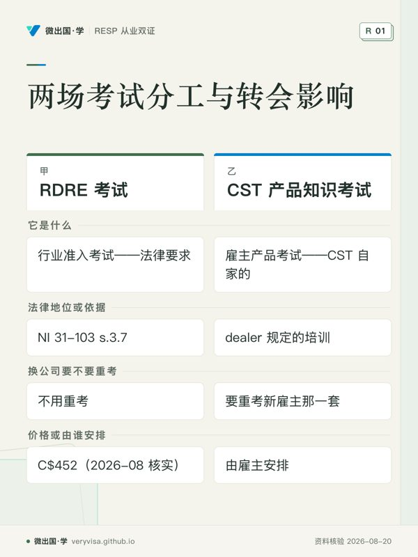
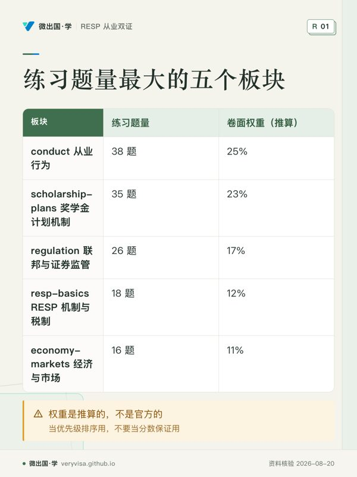

从业行为红线
这是 RDRE 考试题量最大的一簇——152 题里有 38 题落在第 9、10、11 三章，也是执业中唯一会让你丢掉注册资格的一簇。
阅读这组讲义微出国 · 学 · RESP 从业双证（RESPDAC DR + CST 产品知识）
按孩子年龄、家庭身份和具体情况，把开户、领补助、打理、取钱讲透，配计算器与演示； 考 RESPDAC 与 CST 的从业者，讲解与 279 道带解析的练习题照旧在这里。共 37 篇、254,927 字。
从婴儿房到大学宿舍，跟着孩子的成长，安排开户、供款与补助，以及升学后的 EAP 领取。
每一条都在家长群、银行柜台、甚至持牌顾问口中出现过。点进去看官方原文。
第一次学，先读一个主题的讲解，弄清适用条件、容易混淆的概念与例外。读完后合上正文，用自己的话说明判断依据，再进入练习。
查具体问题时，直接使用讲解目录的搜索。涉及考试与实务的内容，要分清题目采用的口径、规则日期和适用范围。
这是 RDRE 考试题量最大的一簇——152 题里有 38 题落在第 9、10、11 三章，也是执业中唯一会让你丢掉注册资格的一簇。
阅读这组讲义CST 产品知识考试考的是一家具体公司，而这家公司在 2020 年手册出版之后改了名、卖掉了一个计划、并进了姊妹公司、涨了费、换了总裁。
阅读这组讲义奖学金计划是加拿大零售投资产品里披露密度最高、费用结构最反直觉的一类，两场考试都要考但口径不同。
阅读这组讲义考试口径最后两章合计约占卷面 11%，形态高度固定（定义—方向—档位），是全课投入产出比最高的一段。
阅读这组讲义补助这一章卷面只占 7 分权重，但它是易变数字的重灾区，也是你上岗后被问得最多的一章——客户只问一句「我一年能拿多少钱」。
阅读这组讲义这是 RDRE 卷面上第二大的一簇（约占 17%），也是最容易被中文读者读拧的一簇——加拿大没有一个证监会，有十三个。
阅读这组讲义RESP 在卷面占 12 分权重，是 RDRE 全卷第二大簇，也是客户上岗第一天就会问的东西。
阅读这组讲义RDRE 第 1 章决定你上岗后第一句话怎么说：先分清「规则」与「统计」，才不会把过期数字讲成现行事实。
阅读这组讲义奖学金计划这一簇（第 5–8 章）在 RDRE 卷面占 23 分权重，是全卷第二大板块，第 5 章本身是这一簇的地基。
阅读这组讲义先按主题答题，提交后读答案和每个错项的解析。答对但说不清原因的题，也回到对应讲解核对条件；熟悉主题后，再做综合自测。
回看错因：是漏读条件、概念混淆，还是记住了旧口径？先补对应讲解，再重新作答。学习记录保存在当前浏览器，跨设备前可在进度页导出备份。
查看进度与错题不看正文也能拿到本站的核心结论。全部知识卡在 <a href="cards/">知识卡</a> 页。


RDRE配比来自章节练习题量，归一到100；CST单独短测。题数、时长与目标分数均为本地自设，不代表官方考试规格。
一屏一个意思，每几张插一道自测。不是把长文切碎——是单独编排过的取舍： 哪些值得独占一屏是判断。适合第一遍学与考前过；要查细节仍回全文讲解。
Conduct, KYC, Ethics & Marketing
这是 RDRE 考试题量最大的一簇——152 题里有 38 题落在第 9、10、11 三章，也是执业中唯一会让你丢掉注册资格的一簇。
CST Product Line 2026
CST 产品知识考试考的是一家具体公司，而这家公司在 2020 年手册出版之后改了名、卖掉了一个计划、并进了姊妹公司、涨了费、换了总裁。
Disclosure Documents & Fees
奖学金计划是加拿大零售投资产品里披露密度最高、费用结构最反直觉的一类，两场考试都要考但口径不同。
Economy & Financial Markets Primer
考试口径最后两章合计约占卷面 11%，形态高度固定（定义—方向—档位），是全课投入产出比最高的一段。
Government Grants 2026
补助这一章卷面只占 7 分权重，但它是易变数字的重灾区，也是你上岗后被问得最多的一章——客户只问一句「我一年能拿多少钱」。
The Regulatory Map
这是 RDRE 卷面上第二大的一簇（约占 17%），也是最容易被中文读者读拧的一簇——加拿大没有一个证监会，有十三个。
RESP: The Tax Deferral Machine
RESP 在卷面占 12 分权重，是 RDRE 全卷第二大簇，也是客户上岗第一天就会问的东西。
Why Save For Education
RDRE 第 1 章决定你上岗后第一句话怎么说：先分清「规则」与「统计」，才不会把过期数字讲成现行事实。
How Group Scholarship Plans Work
奖学金计划这一簇（第 5–8 章）在 RDRE 卷面占 23 分权重，是全卷第二大板块，第 5 章本身是这一簇的地基。
这张表是给你看的，不是给我自己看的。题库还没铺满，哪里薄就写在这里。
| 板块 | 练习配比 | 题数 | 实际占比 | 状态 |
|---|---|---|---|---|
| 为教育储蓄（成本与回报） | 3% | 9 | 3.2% | — |
| RESP 机制与税制 | 12% | 34 | 12.2% | — |
| 政府补助（CESG/ACESG/CLB/省补助） | 7% | 24 | 8.6% | — |
| RESP 的收益与风险 | 3% | 9 | 3.2% | — |
| 奖学金计划机制／披露／费用／经销商 | 23% | 54 | 19.4% | — |
| 从业行为（职责/KYC/道德/营销） | 24% | 60 | 21.5% | — |
| 联邦与证券监管 | 17% | 40 | 14.3% | — |
| 经济与金融市场基础 | 11% | 25 | 9.0% | — |
按年龄、身份、情况各一篇；每条规则带官方出处，配计算器与演示。
RESP 全景：一个家庭从开户到取钱，要知道的全部
RESP 最常见的 5 个误区：领补助不需要永居，这只是第一个
领 RESP 补助不需要永居身份，额度也不一定从落地那年才开始算
自己给孩子开 RESP：从办 SIN 到补助到账，一步一步
孩子刚出生，RESP 第一年该做什么
BC 省 1,200 元 RESP 补助：6 岁生日到 9 岁生日前一天，错过就没了
孩子 10 岁才开始存 RESP，还能拿满 7,200 补助吗
孩子 15 岁了还能拿 RESP 补助吗：16、17 岁的两道门槛
孩子考上大学了，RESP 里的钱怎么取、要准备什么
孩子已经 18 岁、或者我自己想读书，现在开 RESP 还有意义吗
公民和永居家庭的 RESP：身份不是关键，住在哪里才是
工签、学签家庭的孩子能拿 RESP 补助吗
刚落地加拿大第一年，RESP 排在第几位
家庭收入不高，RESP 能多拿什么：额外补助和不用出钱的学习债券
单亲、离婚、祖父母出钱：RESP 该由谁开、离婚了怎么分
住在魁北克，RESP 补助和别的省有什么不同：QESI 怎么和联邦补助叠加
孩子有残疾、可能读不了大学，RESP 里的钱怎么办
孩子去美国、英国或回国读大学，RESP 还能取吗
老大不读大学，RESP 的钱能给老二用吗
RESP 的开户人去世或父母离婚，账户归谁、还能不能继续
爷爷奶奶也给孙子开了 RESP，超过 5 万会被罚多少
孩子不上大学，RESP 的钱是不是白存了
RESP 第一学期只能取 8,000？全日制、非全日制各能取多少
寄养或受政府照顾的孩子，也有 RESP 和学习债券吗
孩子上大学了，RESP 先取补助还是先取本金，怎么取最省税
孩子没读书，RESP 收益转进 RRSP 就能免掉 20% 附加税吗
RESP 从银行转到网上券商，补助会不会丢，要怎么办手续
RESP 不是孤立的：注册账户怎么一起帮家庭多拿钱
RESP 里该买什么：孩子越大越要保守吗，费率差 1% 差多少钱
顾问推荐的集团奖学金计划值不值得买，手里这份要不要退
RESP 年度日历：每年该做的六件事，按月份排好
RDRE 十五章 + CST 产品线，回现行监管与招股书重建。
同一个站，两套牌照课。进度、错题、复习队列都按课分开记，不会串。
RESP 从业双证（RESPDAC DR + CST 产品知识）当前
BC 省保险 Level 1 →
LLQP 人寿保险牌照（BC 省考） →
加拿大个人税（含美国与跨境） →
加拿大企业税（自雇与公司） →
BC 驾照考试（ICBC） →
BC 地产牌照（Trading Services） →
一考一站，各自独立：进度、错题、复习队列互不影响。换设备用进度页的「导出学习数据」。